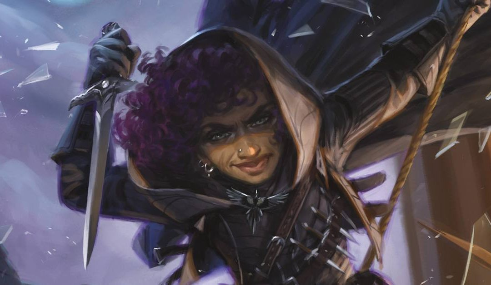

Es una clase con vida media, hecha para aprovechar el sigilo y escabullirse para pegar golpes demoledores y volver a escabullirse.
Los picaros son multiusos, son muy competentes en muchas habilidades, suelen especializarse en persuasión, robar, sigilo... pero tienen capacidad para especializarse en varias tareas, además son enemigos escurridizos y capaces de golpear fuerte a distancia o cuerpo a cuerpo, eso si, no sois tanques, cuidado con cuantos golpes os dan.